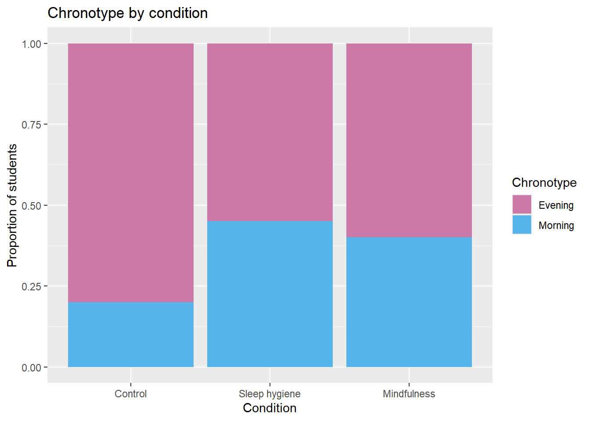
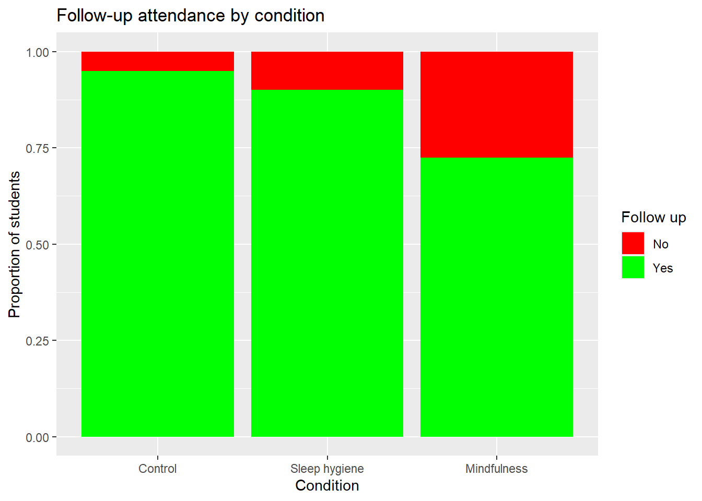
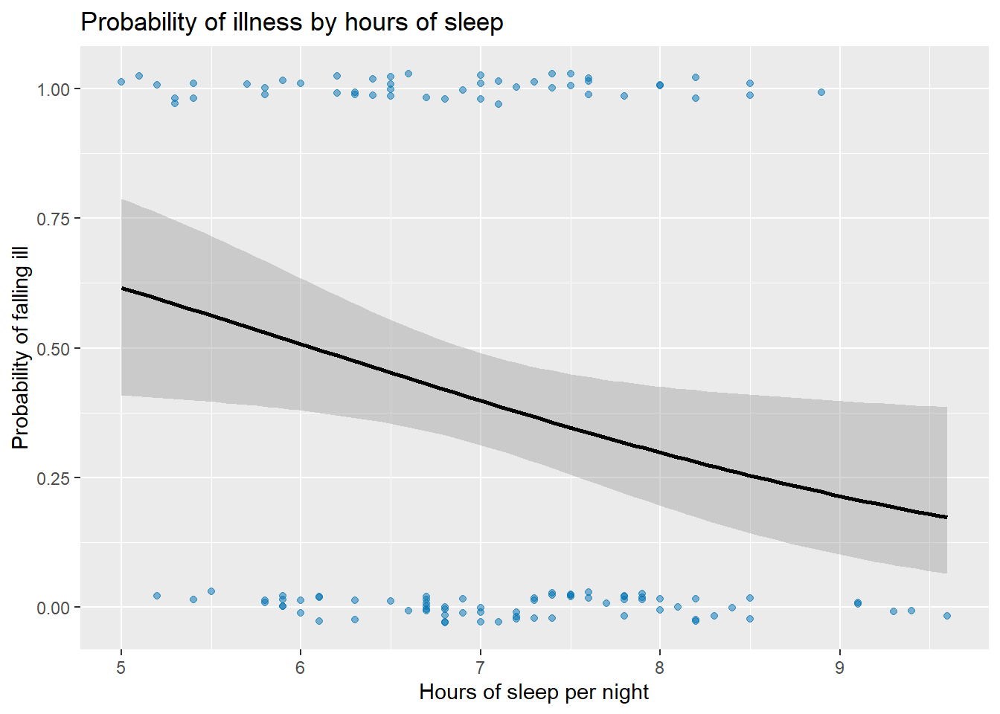

library(ggplot2)PS71020_Unit8_Lab
Categorical Data
Learning Outcomes:
1 - Use RStudio to create contingency tables
2 - Perform and interpret a chi-square test and Cramer’s V
3 - Check the assumptions of a chi-square test
4 - Calculate odds, odds ratios and their log counterparts
5 - Fit a logistic regression model
Materials Used:
We will use the package ggplot2 this is already installed on the RStudio Server but if you are working on your own Laptop you may need to install it.
NoteSome general notes about the weekly labs
You should go through the worksheet during the lab and try to complete as much of it during the lab as you can. You can work on the sheet individually or in small groups during the lab. Try to answer the lab worksheet questions in your own words however. If you are unable to finish the worksheet during the class, try to finish it outside class time. Try to attempt the answer before using the ‘Show Answer’ button.
As you go through the sheet, copy the relevant lines of code to your own analysis script.
A complete model answers script will be available on the VLE page from Fridays after the labs so you can check your own answers.
If you have any queries during the class, please feel free to ask your lab tutors. If your question relates specifically to the lecture content or the homework sheets, please contact Peter Holland by email or use the forum on the VLE page.*
CREATE A NEW PROJECT
Just as we did in previous weeks we are going to start by creating a new project for this week’s lab. Download the data (two files this week) from the VLE (In the Week 8 Lab Materials section) and then copy them into the folder you created your project in. You can also find a direct download link for the data here: Github Link. and here: Github Link.
If you are working on the RStudio Server, then you will need to download the files to your computer and then upload them to the correct folder on the server.
Also create a new script in this folder so you can copy the lines of code needed to run this analysis yourself using just that script.
Given the package above what code do we need to use to load it?
As you will have seen from the answer scripts from previous homeworks and labs it is good to do this at the top of your script instead of just before you use each package.
SECTION A. THE DATASET
We will be using the same dataset that we did in the Week 1 Lecture. We also used an extended version of this study in the Week 6 and 7 Labs.
However, this time we also have a different extension of this with some outcome data that is stored in a separate .csv file.
We have sleep_study.csv, which contains the previously used data of 120 students in 3 separate conditions. We have data on their:
condition - Control, Sleep Hygiene, Mindfulness
id - the participant ID number
chronotype - Evening or Morning
sleep_hours - how many hours of sleep they had before the experiment
caffeine - how much caffeine they consume a day
memory_score - their score on a memory test
wellbeing_final - their final wellbeing score at the end of the experiment.
In the new data sleep_study_outcomes.csv, we have:
id - the participant ID number
fell_ill - a binary (Yes/No) variable indicating if they fell ill in the experiment
attended_followup - a binary (Yes/No) variable indicating if attended a follow up interview
Next we read the data from both files, the old data will be called main and the new data called outcomes.
id condition chronotype sleep_hours caffeine memory_score wellbeing_final
1 1 Control Morning 6.9 0 30 49
2 2 Control Evening 7.2 3 36 48
3 3 Control Evening 6.8 7 24 49
4 4 Control Evening 6.7 5 28 37
5 5 Control Evening 5.3 2 30 42
6 6 Control Evening 6.7 10 26 45 id fell_ill attended_followup
1 16 Yes Yes
2 94 No Yes
3 35 Yes Yes
4 84 Yes Yes
5 91 Yes Yes
6 96 No Nomain <- read.csv("sleep_study.csv") # the data from the earlier labs
outcomes <- read.csv("sleep_study_outcomes.csv") # two new yes/no variables: fell_ill, attended_followup
head(main)
head(outcomes)Look at the id variable in both data sets, this is the participant id. What do you notice?
In the main dataframe these are in ascending order, however, in the outcomes dataframe they appear to be in a random order.
In order to create a single dataframe that combines main and outcome we will therefore need to match by the id variable.
To combine two dataframes with rows in matching order we could use the cbind() function. However, here we will use the merge() function as this. The by = input argument to merge() tells which variable to use to match the two dataframes with.
df <- merge(main, outcomes, by = "id")
head(df) id condition chronotype sleep_hours caffeine memory_score wellbeing_final
1 1 Control Morning 6.9 0 30 49
2 2 Control Evening 7.2 3 36 48
3 3 Control Evening 6.8 7 24 49
4 4 Control Evening 6.7 5 28 37
5 5 Control Evening 5.3 2 30 42
6 6 Control Evening 6.7 10 26 45
fell_ill attended_followup
1 No Yes
2 No Yes
3 No Yes
4 Yes Yes
5 Yes Yes
6 No YesNOTE: here we assumed that all the ids were present in both files, this is simulated data and it was designed so this would be true. For a real data set we would want to check this first using this code:
#returns TRUE if all id present in both dataframes
all(main$id %in% outcomes$id) [1] TRUEWhen first loading csv files what is it that we need to do to set up our categorical data correctly? Do this with the data in df. Remember that the level we enter first in the list is treated as the reference and here we would like to use Control and No as our reference levels
We need to set up our categorical variables as factors.
#create a variable with our condition levels
cond_levels <- c("Control", "Sleep hygiene", "Mindfulness")
df$condition <- factor(df$condition, levels = cond_levels) # Control = reference group
df$chronotype <- factor(df$chronotype)
df$fell_ill <- factor(df$fell_ill, levels = c("No", "Yes"))
df$attended_followup <- factor(df$attended_followup, levels = c("No", "Yes"))Also similarly to we have done previously we are going to create a variable that contains the colours we want to use for each group when plotting:
cond_cols <- c("Control" = "#999999", "Sleep hygiene" = "#0072B2", "Mindfulness" = "#E69F00")The next thing we are going to do is a median split of some of our continuous variables ( wellbeing_final and memory_score). This means that we find the median value in our data and then label anyone at or above that as one group and anyone below that value as the other group.
df$high_wellbeing <- factor(df$wellbeing_final > median(df$wellbeing_final),
levels = c(FALSE, TRUE), labels = c("No", "Yes"))
df$good_memory <- factor(df$memory_score > median(df$memory_score),
levels = c(FALSE, TRUE), labels = c("No", "Yes"))Based on a median split what proportion of participants should be in each group? Check this using the table() function. What do you find?
With a median split we would expect roughly 50% to be in one group and 50% in the other. However, this will not be exactly 50/50 as the median is exactly a score of 50 and the way we did the split was to ask for anyone above this to be in one group. If multiple people are scoring exactly 50 then the No group will be slightly larger.
median(df$wellbeing_final)[1] 50table(df$high_wellbeing) # roughly half "Yes" (we split at the median)
No Yes
65 55 We can compare this to one of the original binary variables which has a less even split:
table(df$fell_ill) # a true yes/no variable: nobody split anything to make it
No Yes
72 48 For the sleep_hours variable we are going to use a different cut-off value for splitting our data and that is anyone who slept 7 or more hours will be labelled as Yes in a new variable in our dataframe called df$good_sleeper, anyone sleeping less than 7 hours should be labelled as No.
Look at the code for how the median splits were conducted above, what would the code be to do this 7 hour based split for sleep_hours. Perform this split.
df$good_sleeper <- factor(df$sleep_hours >= 7,
levels = c(FALSE, TRUE), labels = c("No", "Yes"))
table(df$good_sleeper)
No Yes
57 63 SECTION B. CONTINGENCY TABLE & CHI-SQUARE
The first thing we want to do is to build a contingency table that checks how the chronotype differs across condition:
#We put the predictor first so that it forms the rows
tab <- table(df$condition, df$chronotype)
tab
Evening Morning
Control 32 8
Sleep hygiene 22 18
Mindfulness 24 16We can also use a function called addmargins() to add the sums for each row and each column:
addmargins(tab)
Evening Morning Sum
Control 32 8 40
Sleep hygiene 22 18 40
Mindfulness 24 16 40
Sum 78 42 120If we want to express this as proportions instead of counts, we can use a function called proportions():
proportions(tab)
Evening Morning
Control 0.26666667 0.06666667
Sleep hygiene 0.18333333 0.15000000
Mindfulness 0.20000000 0.13333333Look at the output above, how are each of these proportions calculated? Is this what we want if we want to know what the proportion of participants within a condition have each chronotype?
This is the proportion each cell is of the total 120. You can test this by looking at the first cell:
32/120[1] 0.2666667This isn’t want we want if we need to know proportions within a condition instead of across all conditions. Instead using an optional input argument of margin = 1 asks the function calculate the proportions across rows:
proportions(tab, margin = 1)
Evening Morning
Control 0.80 0.20
Sleep hygiene 0.55 0.45
Mindfulness 0.60 0.40If we want to create a stacked bar chart to plot this we can use this code:
# 100% stacked bars: one bar per row of the table
ggplot(df, aes(x = condition, fill = chronotype)) + #sets up what factor is on the x axis and what factor is used to control the colour
geom_bar(position = "fill") + #sets up that we want a bar chart
scale_fill_manual(values = c("Evening" = "#CC79A7", "Morning" = "#56B4E9")) + #sets the fill colours by category
labs(title = "Chronotype by condition",
x = "Condition", y = "Proportion of students", fill = "Chronotype") #sets up the labels and legend
What is the statistical test we can use to check if the chronotype is independent of condition? And what kind of count do we need to check is sufficient to meet the assumptions of this test?
We can use a chi-square test and the assumption we need to check is that the expected counts are all at least 1 and that at least 80% of the cells have expected counts of at least 5.
Here is the code to perform this test:
# Save the result as an object so we can pull things out of it
chi <- chisq.test(tab)
chi
Pearson's Chi-squared test
data: tab
X-squared = 6.1538, df = 2, p-value = 0.0461The chi object we just created contains a component with the expected counts in it, look at the help for the chisq.test() function and find out what this is.
What code would you use to check that we meet both assumption rules about the expected counts? Does our data meet this assumption
all(chi$expected >= 1) #all expected counts >= 1[1] TRUEmean(chi$expected >= 5) #at least 80% of them >= 5[1] 1Yes, all of our expected counts are at least 1 and at least 80% (in this case it is 100%) of them are greater than 5.
Another component of the chi object contains the standardised residuals.
Find this component and compare this to the value that represents a significant difference at the p < .05 level. Which condition shows a difference in chronotype?
round(chi$stdres, 2)
Evening Morning
Control 2.44 -2.44
Sleep hygiene -1.62 1.62
Mindfulness -0.81 0.81We want to compare these values to >1.96 or <-1.96, the simplest way to do this is:
abs(chi$stdres)>1.96
Evening Morning
Control TRUE TRUE
Sleep hygiene FALSE FALSE
Mindfulness FALSE FALSEWe can see that the control has a different observed from expected value that is significant at the p < .05 level.
Finally we want to calculate an effect size measure.
What is the effect size measure for the chi-square test?
Cramer’s V.
Below is the code to calculate this value:
# V = sqrt( chi-square / (N * (k - 1)) ), where k = the smaller of the number of rows and columns
chi_sq <- unname(chi$statistic) #extract just the value
N <- sum(tab) # number of participants
k <- min(dim(tab)) # dim(tab) = number of rows, number of columns
V <- sqrt(chi_sq / (N * (k - 1)))
round(V, 2)[1] 0.23What size of effect does this represent?
Small to medium. From the lecture slides k of 2 means a small effect would be .1 and a medium .3.
Write the results of this test in an APA format
p_chi <- sub("^0", "", sprintf("%.3f", chi$p.value)) # APA style: .046 not 0.046
V_txt <- sub("^0", "", sprintf("%.2f", V)) # and .23 not 0.23
cat(sprintf("chi-square(%d, N = %d) = %.2f, p = %s, V = %s\n",
chi$parameter, N, chi_sq, p_chi, V_txt))chi-square(2, N = 120) = 6.15, p = .046, V = .23Is this result surprising? Why might we still have found it?
Yes this result is surprising at face value, students were randomly assigned to groups so it is purely by chance that we have ended up with a pattern that is significantly different from what we would expect under the null hypothesis. However, this is to be expected, on average 1 in every 20 (5%) times we did this random assignment we would find a pattern that differs at the p = .05 level.
Earlier on we look at a stacked bar graph that compared chronotype by condition, now we want to create the same graph but for attended_followup by condition.
Although this code might seem complex, try to break it down line by line and use the comments. Try creating a second copy of this code and then edit it so it plots the attended_followup by condition effect in the same stacked bar chart style
# 100% stacked bars: one bar per row of the table
ggplot(df, aes(x = condition, fill = attended_followup)) + #sets up what factor is on the x axis and what factor is used to control the colour
geom_bar(position = "fill") + #sets up that we want a bar chart
scale_fill_manual(values = c("No" = "red", "Yes" = "green")) + #sets the fill colours by category
labs(title = "Follow-up attendance by condition",
x = "Condition", y = "Proportion of students", fill = "Follow up") #sets up the labels and legend
What do you notice about the proportion of No responses and why might this be an issue for a chi-square test?
The proportion of No here is much smaller than Morning in the previous test. This could cause a problem if our expected counts are below the limits of the assumptions.
Create a copy of the code we used above to perform the chi-square test for condition on chronotype and edit it so that it now performs the test for attended_followup by condition. Do we meet the assumptions?
tab_att <- table(df$condition, df$attended_followup)
addmargins(tab_att)
No Yes Sum
Control 2 38 40
Sleep hygiene 4 36 40
Mindfulness 11 29 40
Sum 17 103 120proportions(tab_att, margin = 1)
No Yes
Control 0.050 0.950
Sleep hygiene 0.100 0.900
Mindfulness 0.275 0.725chi_att <- chisq.test(tab_att)
chi_att$expected # look at the "No" column
No Yes
Control 5.666667 34.33333
Sleep hygiene 5.666667 34.33333
Mindfulness 5.666667 34.33333all(chi_att$expected >= 1)[1] TRUEmean(chi_att$expected >= 5) # 1 = every cell is at least 5, so the rule is met[1] 1chi_att$p.value[1] 0.010136We just meet the assumptions although the expected counts of 5.67 are only slightly above 5. If we had broken the assumption we could have run a fisher’s exact test like this:
fisher.test(tab_att)$p.value[1] 0.01513874You can see that the p-value is similar but slightly larger. Fisher’s test tends to be slightly more conservative.
SECTION C. ODDS RATIOS & CONFIDENCE INTERVALS
Here we will look at the condition variable and see if it affects the odds of being Yes or No on high_wellbeing.
Create a contingency table with the proportions of high_wellbeing as a function of condition
tab_w <- table(df$condition, df$high_wellbeing)
addmargins(tab_w)
No Yes Sum
Control 31 9 40
Sleep hygiene 13 27 40
Mindfulness 21 19 40
Sum 65 55 120round(100 * prop.table(tab_w, margin = 1), 1) #here expressed as percentages
No Yes
Control 77.5 22.5
Sleep hygiene 32.5 67.5
Mindfulness 52.5 47.5If we want to specifically compare the odds in the Control and Sleep Hygiene groups we can follow the format of the lecture slides:
| High wellbeing (Yes) | Not high (No) | |
|---|---|---|
| Sleep hygiene | a | b |
| Control | c | d |
Here is some code that extracts the correct cells:
sh_yes <- tab_w["Sleep hygiene", "Yes"] # a
sh_no <- tab_w["Sleep hygiene", "No"] # b
ct_yes <- tab_w["Control", "Yes"] # c
ct_no <- tab_w["Control", "No"] # dHow would you calculate the odds of being in the High Wellbeing Yes group compared to No for each of these conditions using these variables
odds_sh <- sh_yes / sh_no
round(odds_sh,2) # odds in sleep hygiene (rounded to 2 dp)[1] 2.08odds_ct <- ct_yes / ct_no
round(odds_ct,2) # odds in control[1] 0.29How would we calculate the odds ratio for these two groups and what does this mean?
OR <- odds_sh / odds_ct
round(OR,2)[1] 7.15This means that the odds of being in the Yes for high_wellbeing are more than 7 times higher than they are in the control group.
NOT that you are 7 times more likely to be in the Yes for high_wellbeing in the sleep hygiene than the control group.
Now we will calculate the 95% confidence interval for this odds ratio but first we will move to working on a log scale.
Why is it useful to work with log(odds ratios) instead of odds from a statistical testing point of view?
An odds ratio of 1 indicates the same odds in both conditions however, they are not symmetrical. OR 2 and OR 0.5 are equal-sized effects in opposite directions, but on the log scale they are +0.69 and −0.69
Moving to a log(OR) scale means they are centered on 0 and symmetrical, the sampling distribution of log(OR) is approximately normal.
This makes performing statistics easier, although they are harder for humans to interpret.
The function log() in R can be used to calculate logarithms, its default is to work in base e which is what we want here:
log_OR <- log(OR)
round(log_OR,2)[1] 1.97We can use the formula from the lecture slides to calculate the standard error of the log(odds):
se_log_OR <- sqrt(1/sh_yes + 1/sh_no + 1/ct_yes + 1/ct_no)
se_log_OR[1] 0.5072763And then calculate the 95% confidence intervals on the log(odds):
ci_log_OR <- log_OR + c(-1, 1) * 1.96 * se_log_OR
ci_log_OR[1] 0.9733885 2.9619118What is the key thing to notice about these confidence intervals
They don’t include 0 which indicates a significant log(OR) at the p = .05 level.
We can then convert these back to the original odds ratio scale using the function exp(), this exponentiates the value and is the inverse function of log().
ci_OR <- exp(ci_log_OR)
ci_OR[1] 2.646898 19.334900What is the key thing to notice about these confidence intervals
They don’t include 1 which indicates a significant OR at the p = .05 level.
Write a sentence reporting the Sleep Hygiene result
The odds of high wellbeing (above the median at week 8) were 7.15 times as high in the sleep hygiene condition than in the control condition (67.5% vs 22.5%; OR = 7.15, 95% CI [2.65, 19.33]).
Using the code above as a template calculate the odds ratio for fell_ill in good sleepers vs poor sleepers. Is it above or below 1?
| Ill (No) | Ill (Yes) | |
|---|---|---|
| Sleep (No) | a | b |
| Sleep (Yes) | c | d |
#notice that in the code we haven't used exactly the same variable names as before, this is so that the code does not just overwrite the values and we still have access to the old ones if we needed to build a final report.
tab_s <- table(df$good_sleeper, df$fell_ill)
tab_s
No Yes
No 31 26
Yes 41 22no_yes <- tab_s["No", "Yes"] # b
no_no <- tab_s["No", "No"] # a
yes_yes <- tab_s["Yes", "Yes"] # d
yes_no <- tab_s["Yes", "No"] # c
# ---- Odds of illness in each group, then the odds ratio ----
odds_good <- yes_yes / yes_no # odds of illness for good sleepers
round(odds_good,2)[1] 0.54odds_poor <- no_yes / no_no # odds of illness for poor sleepers (the reference group)
round(odds_poor,2)[1] 0.84OR_ill <- odds_good / odds_poor
OR_ill[1] 0.6397749log_OR_ill <- log(OR_ill)
se_log_OR_ill <- sqrt(1/yes_yes + 1/yes_no + 1/no_yes + 1/no_no)
ci_OR_ill <- exp(log_OR_ill + c(-1, 1) * 1.96 * se_log_OR_ill)
round(ci_OR_ill, 2) [1] 0.31 1.33The odds of illness were 0.64 times as high for good sleepers as for poor sleepers (34.9% vs 45.6% ill). The interval includes 1, so we can’t rule out no difference in odds.
SECTION D. LOGISTIC REGRESSION
We are now going to perform a logistic regression, to do this we will use the glm() function. This works very similarly to the lm() function we have used for linear models but instead fits a generalised linear model which enables us to use different link functions. Here we will use the input argument family = binomial which tells the model: “binary outcome, logit link”.
m_well <- glm(high_wellbeing ~ condition, data = df, family = binomial)
summary(m_well)
Call:
glm(formula = high_wellbeing ~ condition, family = binomial,
data = df)
Coefficients:
Estimate Std. Error z value Pr(>|z|)
(Intercept) -1.2368 0.3786 -3.266 0.001090 **
conditionSleep hygiene 1.9677 0.5073 3.879 0.000105 ***
conditionMindfulness 1.1367 0.4936 2.303 0.021282 *
---
Signif. codes: 0 '***' 0.001 '**' 0.01 '*' 0.05 '.' 0.1 ' ' 1
(Dispersion parameter for binomial family taken to be 1)
Null deviance: 165.52 on 119 degrees of freedom
Residual deviance: 148.45 on 117 degrees of freedom
AIC: 154.45
Number of Fisher Scoring iterations: 4The way formula inputs work for glm() is the same as lm().
In the formula above what are we asking the model to use as our outcome variable and what is our predictor
high_wellbeing is the outcome and condition is the predictor, in other words we are asking if the odds of being a Yes in the high_wellbeing are dependent on condition.
The output of glm() is very similar to that of lm(). glm() models the second factor level, so here Yes is the one being modeled. However, here the Estimates are the log odds ratios, we can use the exp() function again to turn these into the more human readable odds:
exp(coef(m_well)) (Intercept) conditionSleep hygiene conditionMindfulness
0.2903226 7.1538462 3.1164021 Compare the odds ratio for the conditionSleep hygiene (which is comparing Sleep Hygiene to Control), to those we found earlier using the manual calculation of odds ratios, they are both the same at 7.15.
We can also see from the output of glm() that the comparison of Mindfulness to Control is significant with an odds ratio of 3.12.
We can also calculate the confidence intervals for the odds ratio:
exp(confint.default(m_well)) 2.5 % 97.5 %
(Intercept) 0.1382232 0.6097904
conditionSleep hygiene 2.6469479 19.3345379
conditionMindfulness 1.1844557 8.1995150These again match the ones we calculated by hand for the Sleep Hygiene to Control comparison.
The advantage of logistic regression is that we can also model the effect of continuous predictors on binary outcome variables.
Do this for the effect of sleep_hours on the odds of falling ill (fell_ill)
m_ill <- glm(fell_ill ~ sleep_hours, data = df, family = binomial)
summary(m_ill)
Call:
glm(formula = fell_ill ~ sleep_hours, family = binomial, data = df)
Coefficients:
Estimate Std. Error z value Pr(>|z|)
(Intercept) 2.6873 1.3892 1.935 0.0531 .
sleep_hours -0.4429 0.1983 -2.233 0.0255 *
---
Signif. codes: 0 '***' 0.001 '**' 0.01 '*' 0.05 '.' 0.1 ' ' 1
(Dispersion parameter for binomial family taken to be 1)
Null deviance: 161.52 on 119 degrees of freedom
Residual deviance: 156.21 on 118 degrees of freedom
AIC: 160.21
Number of Fisher Scoring iterations: 4exp(coef(m_ill)) # odds ratio for ONE extra hour of sleep(Intercept) sleep_hours
14.6924943 0.6421644 exp(confint.default(m_ill)) 2.5 % 97.5 %
(Intercept) 0.9652598 223.6386474
sleep_hours 0.4353473 0.9472328An odds ratio BELOW 1 means the odds go down. exp(b) = 0.64 means each extra hour of sleep multiplies the odds of illness by 0.64: about 36% lower odds per hour.
We can use the code below to plot this and see the (very shallow) sigmoid curve:
ggplot(df, aes(x = sleep_hours, y = as.numeric(fell_ill == "Yes"))) +
geom_jitter(height = 0.03, width = 0, alpha = 0.5, colour = "#0072B2") +
geom_smooth(method = "glm", method.args = list(family = binomial),
formula = y ~ x, colour = "black", se = TRUE) +
labs(title = "Probability of illness by hours of sleep",
x = "Hours of sleep per night", y = "Probability of falling ill")
SECTION E. PITFALLS OF MEDIAN SPLITS
Splitting a score into “high” and “low” throws away information: a student just above the cut-off is treated as completely different from one just below it, and as identical to the highest scorer. Let’s see what that costs, using the same data, looking at the effect of condition on wellbeing, either as a continuous wellbeing_final or a median split high_wellbeing.
Here is a regression with the continuous outcome:
fit_cont <- lm(wellbeing_final ~ condition, data = df) # keeps the whole wellbeing score
anova(fit_cont) Analysis of Variance Table
Response: wellbeing_final
Df Sum Sq Mean Sq F value Pr(>F)
condition 2 987.2 493.61 10.844 4.782e-05 ***
Residuals 117 5325.8 45.52
---
Signif. codes: 0 '***' 0.001 '**' 0.01 '*' 0.05 '.' 0.1 ' ' 1If we compare the probabilities assigned to the condition predictor in both models we can see that that from the median split version is much higher than for the continuous outcome variable:
p_cont_well <- anova(fit_cont)[1, "Pr(>F)"]
p_split_well <- anova(m_well, test = "Chisq")[2, "Pr(>Chi)"]
p_cont_well[1] 4.782275e-05p_split_well[1] 0.0001964996Another example of this effect is if we look at the effect of sleep on the odds of falling ill. Here we are looking at the effect of splitting a predictor instead of an outcome.
If we use fell_ill ~ sleep_hours which uses sleep_hours as a continuous predictor we find a significant effect of sleep_hours (p = .026).
However, if we use our good_sleeper binary variable, which we split the continuous sleep_hours into those who slept at least 7 hours (good_sleeper = Yes) and those who slept less that 7 hours (good_sleeper = No). We now see that the effect of sleep is not significant (p = .053):
m_ill_split <- glm(fell_ill ~ good_sleeper, data = df, family = binomial)
summary(m_ill)$coefficients # continuous sleep_hours Estimate Std. Error z value Pr(>|z|)
(Intercept) 2.6873368 1.3891555 1.934511 0.05305032
sleep_hours -0.4429109 0.1983202 -2.233312 0.02552838summary(m_ill_split)$coefficients # sleep split into good / not good sleepers Estimate Std. Error z value Pr(>|z|)
(Intercept) -0.1758907 0.2659316 -0.6614132 0.5083473
good_sleeperYes -0.4466389 0.3749192 -1.1912940 0.2335382Unless there is a good reason for a binary outcome variable, such as with fell_ill and attended_followup here, it is only under exceptional circumstances that you want to perform a median split.